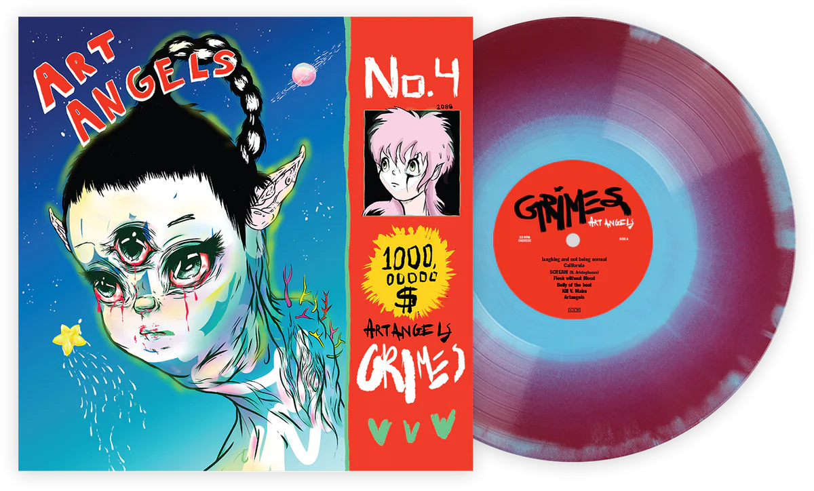

⋙ ART ANGELS ⋘
En 2015, la cantante canadiense Grimes lanzó su cuarto álbum de estudio, titulado "Art Angels". Después de la aclamación crítica y el éxito comercial de su álbum anterior, "Visions", Grimes decidió explorar nuevos territorios en su música, y "Art Angels" fue el resultado de ese proceso.
El álbum es una mezcla de géneros que incluyen pop, rock, electrónica y hip-hop. La voz de Grimes flota sobre los instrumentos, creando una atmósfera etérea y experimental. Las canciones abordan temas como la identidad, la fama y el amor, y están llenas de letras inteligentes y emocionales.
Una de las canciones más destacadas del álbum es "Flesh without Blood", un himno pop pegadizo con una letra irónica y sarcástica sobre la fama y la fortuna. La canción es un ejemplo de cómo Grimes combina el pop accesible con letras que desafían las convenciones de la cultura pop.
Otra canción destacada es "Kill V. Maim", una canción electrónica con un ritmo rápido y energético. La letra es una exploración de la identidad de género, con Grimes cantando en la voz de un personaje ficticio que se identifica como un hombre y quiere vengarse de los que lo han lastimado. La canción es un ejemplo de cómo Grimes utiliza la música para explorar temas sociales y políticos.
El álbum también cuenta con colaboraciones con otros artistas, como la cantante taiwanesa Aristophanes en la canción "SCREAM". La canción combina la voz hipnótica de Aristophanes con la electrónica inquietante de Grimes, creando una canción que es al mismo tiempo emocionalmente poderosa y experimental.
En general, "Art Angels" recibió críticas positivas por su originalidad y experimentación. El álbum es un ejemplo de cómo la música pop puede ser tanto accesible como desafiante, y cómo los artistas pueden utilizar la música para explorar temas sociales y políticos importantes. Grimes ha demostrado una vez más que es una de las artistas más emocionantes e innovadoras de la música pop actual.